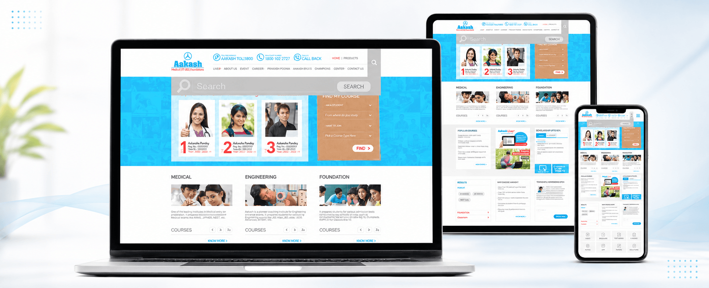
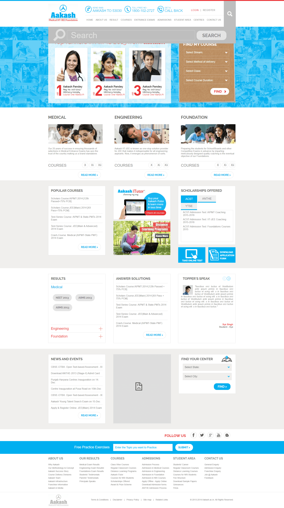

Streams, classes, delivery methods, course durations and centres create many possible starting points.
← Back to workEvery ambition.
Aakash Institute · Education Website
Every ambition.
A clearer next step.

Project overview
Many academic pathways.
One decisive experience.
Students and parents arrive with different goals, classes, exams, locations and levels of certainty.
We created a responsive platform that organises Medical, Engineering and Foundation programmes around course discovery, outcomes and practical admission actions.
- Platform
- Education Portal
- Pathways
- Medical + Engineering
- Utility
- Course Finder
- Build
- Responsive Web
The organising idea
Turn uncertainty
into a useful decision.
The homepage prioritises what prospective students need most: identify the right stream, class, course type and location—then find the relevant programme.
Results, faculty, scholarships and learning resources reinforce that decision without interrupting it.
The experience challenge
Organise high information density.
Protect student focus.
Results, scholarships, faculty, testimonials and forms must support decisions without competing for attention.
The decision journey
Find the goal.
Match the pathway.
- 01
Orient
Separate Medical, Engineering and Foundation into immediate entry points.
- 02
Filter
Use guided selections to narrow stream, class, delivery and location.
- 03
Validate
Bring results, faculty, testimonials and scholarships into the consideration journey.
- 04
Act
Connect users to tests, applications, centres and relevant course information.
The complete experience
A homepage designed
like a decision system.
The long-form experience balances course discovery with results, learning tools, scholarships, centre finding and student support.
Education portalCourse finder, pathways, proof and practical actions

The information architecture
Dense with options.
Disciplined in order.
Course finder
A guided utility turns a broad catalogue into a relevant set of options.
Stream architecture
Medical, Engineering and Foundation stay visually distinct but structurally consistent.
Decision proof
Results, faculty and testimonials answer the confidence questions around selection.
Action utilities
Scholarship tests, application forms, resources and centre discovery remain close at hand.
Responsive by priority
The same journey.
Less screen required.
Responsive layouts preserve the decision order, making course exploration and important actions practical from desktop planning to mobile research.

The outcome
A complex institution.
Made easier to navigate.
A responsive education platform that helps students move from aspiration to an appropriate programme while keeping evidence, resources and application pathways connected.
Faster orientation
Clear stream-level entry points help users understand where their journey begins.
Relevant discovery
Guided course selection reduces the effort required to find suitable options.
Connected action
Tests, applications, centres and resources form part of one coherent decision flow.
Choose the ambition.Find the way forward.
Building a high-consideration platform?